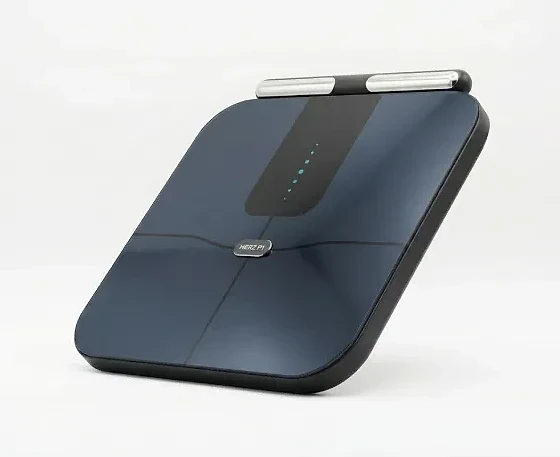

Was ist Herz P1 Smart Scale und wie funktioniert es?
Die Herz P1 Smart Scale ist eine smarte Körperanalysewaage für zu Hause. Laut der offiziellen Website misst sie nicht nur das Gewicht, sondern liefert insgesamt 56 Körperwerte, darunter Körperfett, Muskelmasse, Körperwasser, Knochenmasse, Viszeralfett und das sogenannte Stoffwechselalter.
Die Waage arbeitet nach Angaben des Herstellers mit einer 8-Elektroden-Dual-Frequenz-Bioimpedanzanalyse (BIA). Dabei fließt ein schwacher, nicht spürbarer Strom durch den Körper, und aus dem Widerstand werden die verschiedenen Werte berechnet.
Der Unterschied zu einfachen Körperfettwaagen ist der ausziehbare Handgriff. Normale Waagen messen laut Website nur über die Füße und damit vor allem die Beine. Mit dem Griff in den Händen erfasst die Herz P1 auch Arme und Rumpf und kann die Werte nach Körperregionen aufschlüsseln.
Die Ergebnisse erscheinen nach jeder Messung auf einem großen 76-mm-LED-Display direkt an der Waage und werden per Bluetooth an die kostenlose App übertragen. Laut Hersteller fallen keine monatlichen Abogebühren an, um die eigenen Daten und den Verlauf zu sehen.
Die App synchronisiert sich nach Angaben der Website mit Apple Health, Google Fit, Fitbit und Samsung Health. Bis zu 24 Nutzerprofile werden unterstützt, und die Waage erkennt laut Hersteller automatisch, wer gerade draufsteht.
Hinter dem Produkt steht laut Impressum die T1B B.V. mit Sitz in Amsterdam in den Niederlanden. Die Waage wird laut Website in Deutschland, Österreich und der Schweiz ausgeliefert, und der Kundenservice ist per E-Mail und Telefon erreichbar, falls bei der Einrichtung Fragen auftauchen.
Wichtig: Der Hersteller betont selbst, dass die Waage allgemeinen Wellness- und Fitnesszwecken dient und kein Medizinprodukt ist. Sie stellt keine Diagnosen und ersetzt keine ärztliche Untersuchung. Die Messwerte sind Schätzungen, die je nach Tageszeit, Flüssigkeitshaushalt und Messbedingungen schwanken können.
Herz P1 Smart Scale Funktionen
Laut den technischen Daten auf der offiziellen Website bietet die Herz P1 Smart Scale die folgenden Funktionen:
8-Elektroden-Dual-Frequenz-BIA: Messung über Hände und Füße für eine Ganzkörper-Analyse mit getrennten Werten für Ober- und Unterkörper.
56 Körperwerte: von Körperfett und Muskelmasse über Körperwasser bis zu Viszeralfett und Ruhepuls.
76-mm-LED-Display: die wichtigsten Werte direkt an der Waage, ohne das Smartphone zu öffnen.
Akku mit bis zu 180 Tagen Laufzeit: pro Ladung, laut Hersteller.
Bluetooth und App: für iOS und Android, mit Synchronisation zu Apple Health, Google Fit, Fitbit und Samsung Health.
Robuste Plattform: 6 mm Sicherheitsglas, Tragkraft bis 180 kg in 100-g-Schritten, Maße 324,5 × 300 × 31,5 mm.
Die App zeigt den Verlauf ohne zeitliche Begrenzung und kann laut Website einen PDF-Bericht erstellen, den man zum Beispiel zum nächsten Arzttermin mitnehmen kann.
Bis zu 24 Personen können die Waage mit eigenem Profil nutzen, sodass sie sich für den ganzen Haushalt eignet. Die Daten jedes Nutzers bleiben laut Hersteller getrennt im eigenen App-Profil, auch wenn mehrere Personen die Waage täglich verwenden.
Herz P1 Smart Scale Anwendung
Laut der offiziellen Website ist die Messung in wenigen Schritten erledigt: barfuß auf die Waage steigen, den ausziehbaren Handgriff in beide Hände nehmen und einige Sekunden ruhig stehen bleiben. Danach erscheinen die Ergebnisse auf dem Display und in der App.
Vor der ersten Messung wird die kostenlose App auf dem Smartphone installiert und die Waage per Bluetooth gekoppelt. Laut Hersteller ist die Verbindung danach automatisch, sodass die Werte bei jeder Messung im eigenen Profil gespeichert werden.
Für möglichst vergleichbare Ergebnisse empfiehlt es sich, immer unter ähnlichen Bedingungen zu messen, zum Beispiel morgens nach dem Aufstehen, vor dem Frühstück und nach dem Toilettengang. Bioimpedanzwerte reagieren auf Flüssigkeit, Essen und Sport.
Stellen Sie die Waage auf einen festen, ebenen Boden und messen Sie mit trockener Haut an Händen und Füßen. Geladen wird der Akku laut Hersteller nur etwa alle sechs Monate, also bis zu 180 Tage pro Ladung.
Allgemeiner Hinweis zu Körperanalysewaagen mit Bioimpedanz: Menschen mit Herzschrittmacher oder anderen elektronischen Implantaten sowie Schwangere sollten solche Waagen nur nach Rücksprache mit dem Arzt oder laut Bedienungsanleitung verwenden. Lesen Sie vor der ersten Nutzung die Sicherheitshinweise des Herstellers.
Herz P1 Smart Scale – Rückerstattung
Laut der Rückgabe-Richtlinie auf der offiziellen Website gibt es für die Herz P1 eine 90-Tage-Geld-zurück-Garantie. Innerhalb von 90 Tagen nach Erhalt können Artikel zurückgesendet werden, wenn man es sich anders überlegt hat oder nicht zufrieden ist.
Diese Garantie gilt nach Angaben des Herstellers zusätzlich zum gesetzlichen Widerrufsrecht von 14 Tagen, das unberührt bleibt. Die längere Frist gibt Ihnen also deutlich mehr Zeit, die Waage im Alltag zu testen.
Für eine Rücksendung wenden Sie sich zuerst an den Kundenservice per E-Mail oder Telefon. Danach erhalten Sie die Anweisungen zur Rücksendung an das Warenlager. Die Rückgabe-Richtlinie nennt als Voraussetzung, dass die Ware in der ungeöffneten Originalverpackung und im Originalzustand zurückkommt, zusammen mit einem Kaufnachweis.
Die Kosten der Rücksendung tragen laut Richtlinie die Kunden. Die Erstattung erfolgt auf das ursprüngliche Zahlungsmittel und kann nach Eingang und Prüfung der Rücksendung bis zu zehn Werktage dauern.
Beschädigt angekommene Ware sollten Sie laut Website umgehend dem Kundenservice melden; dafür gelten eigene Regeln für Ersatzlieferungen. Lesen Sie die vollständige Richtlinie vor dem Kauf, denn nur die aktuellen Angaben des Herstellers sind verbindlich.
Bewahren Sie die Originalverpackung und Ihre Bestellbestätigung auf. So können Sie eine Rückgabe innerhalb der Frist schnell einleiten. Bei Käufen über andere Händler ist dagegen nicht sicher, dass diese 90-Tage-Garantie überhaupt gilt.
Herz P1 Smart Scale Kundenbewertungen
-
Emilia KöhlerVerifizierter Kauf
„Mit Technik habe ich es nicht so — aber das war einfach. Bluetooth war sofort verbunden. Ich liebe die Wassereinlagerungs-Werte; sie helfen mir zu verstehen, warum mein Gewicht von Tag zu Tag schwankt.“
-
Janine MeyerVerifizierter Kauf
„Wir haben sie für den ganzen Haushalt gekauft. Mein Mann und ich nutzen sie beide — und sie erkennt automatisch, wer draufsteht. Toll, unseren Fortschritt in der App nebeneinander zu sehen, ohne dass die Daten vermischt werden.“
-
Marc BergerVerifizierter Kauf
„Ich liebe, dass ich nicht das Smartphone in der Hand halten muss, um die Zahlen zu sehen. Der Bildschirm ist riesig und hell. Sie funktioniert einfach.“
Herz P1 Smart Scale – Wo kaufen?
Die Herz P1 Smart Scale ist laut Hersteller direkt über die offizielle Website erhältlich. Dort finden Sie die aktuelle Verfügbarkeit, die technischen Daten, die häufig gestellten Fragen und die Rückgabe-Richtlinie mit der 90-Tage-Garantie an einem Ort. Auch das Impressum mit den Kontaktdaten des Anbieters ist dort verlinkt.
Die offizielle Website nennt keine Elektronikmärkte oder großen Onlinehändler als Verkaufsstellen. Ähnlich aussehende Waagen auf Marktplätzen stammen daher nicht unbedingt vom Hersteller und können andere Sensoren, eine andere App oder sogar ein Abo-Modell verwenden.
Ein Kauf direkt beim Hersteller hat den Vorteil, dass die 90-Tage-Geld-zurück-Garantie greift und der Kundenservice bei Fragen zur Einrichtung, zur App oder zur Rückgabe erreichbar ist. Bei Drittanbietern ist das nicht in gleicher Weise gegeben.
Achten Sie beim Besuch der Website auf eine sichere Verbindung und prüfen Sie im Impressum, dass die T1B B.V. aus Amsterdam als Anbieter genannt wird. So stellen Sie sicher, dass Sie die originale Herz P1 mit Handgriff und 8-Elektroden-Messung erhalten.
Um sicherzugehen, dass Sie das Originalprodukt erhalten, besuchen die meisten Nutzer die offizielle Website.
Ist Herz P1 Smart Scale Betrug?
Nach den verfügbaren Informationen gibt es keinen Hinweis darauf, dass die Herz P1 Smart Scale Betrug ist. Die Waage wird über eine eigene Website verkauft, die technische Daten, eine Rückgabe-Richtlinie, ein Impressum und Kontaktdaten nennt.
Laut Impressum ist die T1B B.V. aus Amsterdam der Anbieter, eingetragen im niederländischen Handelsregister und mit einer europäischen Umsatzsteuer-Identifikationsnummer. Für Fragen gibt es eine E-Mail-Adresse und eine Telefonnummer.
Positiv sind die 90-Tage-Geld-zurück-Garantie, die zusätzlich zum gesetzlichen Widerrufsrecht gilt, und die kostenlose App ohne monatliche Gebühren. Das senkt das Risiko für Käufer deutlich.
Beachten sollte man, dass die Herstellerseite als Werbung gekennzeichnet ist und mit starken Aussagen arbeitet, etwa zur Genauigkeit im Vergleich zu Profi-Geräten. Bioimpedanzwaagen liefern Schätzwerte; sie eignen sich gut, um Trends über Wochen zu verfolgen, ersetzen aber keine ärztliche Untersuchung oder Messung in der Praxis.
Vorsicht ist vor allem bei Angeboten außerhalb der offiziellen Website geboten. Nachahmungen können anders gebaut sein, und bei solchen Käufen gilt die Garantie des Herstellers in der Regel nicht.
Wer direkt beim Hersteller bestellt und realistische Erwartungen an die Messwerte hat, geht beim Kauf der Herz P1 Smart Scale nach heutigem Stand kein besonderes Risiko ein. Ergebnisse und Messwerte können von Person zu Person variieren.
Wer Produktdetails überprüfen oder die aktuelle Verfügbarkeit prüfen möchte, ist auf der offiziellen Herz P1 Smart Scale-Website am sichersten aufgehoben.